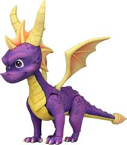

clique para saber mais
O jogo Spyro fez parte da minha infância, e gostava muito de jogar pelo PS1.
A jogabilidade é fácil e intuitiva! Para quem gosta de jogo de ação, recomendo.
O jogo Spyro fez parte da minha infância, e gostava muito de jogar pelo PS1.
A jogabilidade é fácil e intuitiva! Para quem gosta de jogo de ação, recomendo.